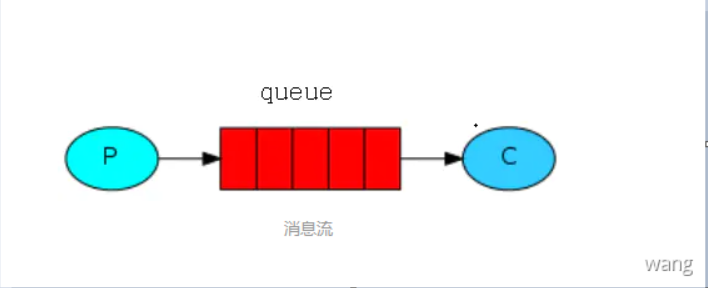
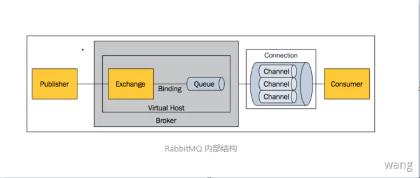
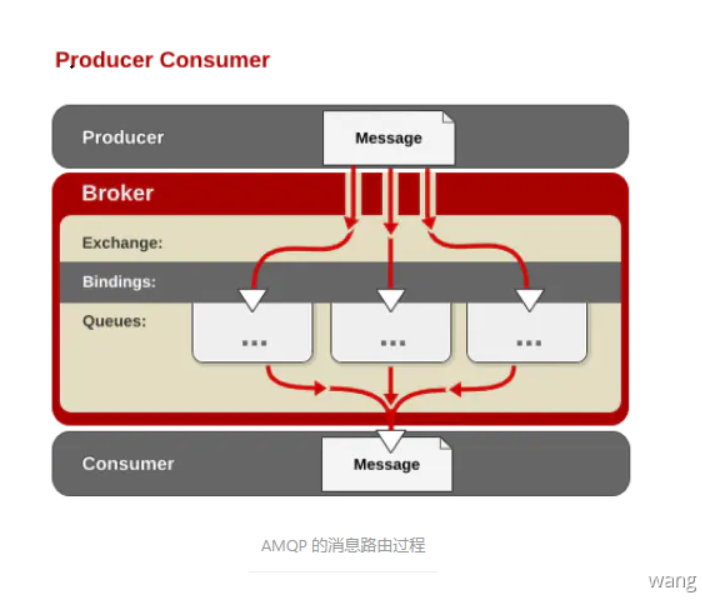
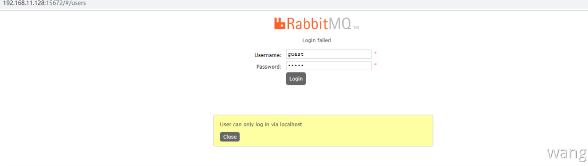

消息(Message )是指在应用间传送的数据。消息可以非常简单，比如只包含文本字符串，也可以更复杂，可能包含嵌入对象。
消息队列（Message Queue）是一种应用间的通信方式，消息发送后可以立即返回，由消息系统来确保消息的可靠传递。消息发布者只管把消息发布到 MQ 中而不用管谁来取，消息使用者只管从MQ中取消息而不管是谁发布的。发布者和使用者都不用知道对方的存在。
消息队列应用场景
消息队列是一种应用间的异步协作机制，以常见的订单系统为例，用户点击【下单】按钮之后的业务逻辑可能包括：扣减库存、生成相应单据、发红包、发短信通知。在业务发展初期这些逻辑可能放在一起同步执行，随着业务的发展订单量增长，需要提升系统服务的性能，这时可以将一些不需要立即生效的操作拆分出来异步执行，比如发放红包、发短信通知等。这种场景下就可以用 MQ，在下单的主流程（比如扣减库存、生成相应单据）完成之后发送一条消息到MQ让主流程快速完结，而由另外的单独线程拉取 MQ 的消息（或者由 MQ 推送消息），当发现 MQ 中有发红包或发短信之类的消息时，执行相应的业务逻辑。以上是用于业务解耦的情况，其它常见场景包括最终一致性、广播、错峰流控等。
Features
RabbitMQ 是一个由 Erlang 语言开发的 AMQP 的开源实现。
AMQP(Advanced Message)
高级消息队列协议。它是应用层协议的一个开放标准，为面向消息的中间件设计，基于此协议的客户端与消息中间件可传递消息，并不受产品、开发语言等条件的限制。
可靠性(Reliability)
RabbitMQ 使用一些机制来保证可靠性，如持久化、传输确认、发布确认。
灵活的路由(Flexible Routing)
在消息进入队列之前，通过 Exchange 来路由消息的。对于典型的路由功能，RabbitMQ 已经提供了一些内置的 Exchange 来实现。针对更复杂的路由功能，可以将多个 Exchange绑定在一起，也通过插件机制实现自己的 Exchange。
消息集群(Clustering)
多个RabbitMQ服务器可以组成一个集群,形成一个逻辑 Broker。
高可用(Highly Available Queues)
队列可以在集群中的机器上进行镜像，使得在部分节点出问题的情况下队列仍然可用。
可靠性(Reliability)
RabbitMQ 支持多种消息队列协议，比如 STOMP、MQTT 等。
多语言客户端(Many Clients)
RabbitMQ 几乎支持所有常用语言，比如 Java、.NET、Ruby 等。
管理界面(Management UI)
RabbitMQ 提供了一个易用的用户界面，使得用户可以监控和管理消息Broker的许多方面。
跟踪机制(Tracing)
如果消息异常，RabbitMQ 提供了消息跟踪机制，使用者可以找出发生了什么。
插件机制(Plugin System)
RabbitMQ 提供了许多插件，来从多方面进行扩展，也可以编写自己的插件。
概念模型
消息模型
所有 MQ 产品从模型抽象上来说都是一样的过程：消费者（consumer）订阅某个队列。生产者（producer）创建消息，然后发布到队列（queue）中，最后将消息发送到监听的消费者。

RabbitMQ 基本概念
上面只是最简单抽象的描述，具体到 RabbitMQ则有更详细的概念需要解释。上面介绍过 RabbitMQ 是 AMQP协议的一个开源实现，所以其内部实际上也是 AMQP 中的基本概念。

名词解释
Message
消息，消息是不具名的，它由消息头和消息体组成。消息体是不透明的，而消息头则由一系列的可选属性组成，这些属性包括routing-key（路由键）、priority（相对于其他消息的优先权）、delivery-mode（指出该消息可能需要持久性存储）等。
Publisher
消息的生产者，也是一个向交换器发布消息的客户端应用程序。
Exchange
交换器，用来接收生产者发送的消息并将这些消息路由给服务器中的队列。
Binding
绑定，用于消息队列和交换器之间的关联。一个绑定就是基于路由键将交换器和消息队列连接起来的路由规则，可以将交换器理解成一个由绑定构成的路由表。
Queue
消息队列，用来保存消息直到发送给消费者。它是消息的容器，也是消息的终点。一个消息可投入一个或多个队列。消息一直在队列里面，等待消费者连接到这个队列将其取走。
Connection
网络连接，比如一个TCP连接。
Channel
信道，多路复用连接中的一条独立的双向数据流通道。信道是建立在真实的TCP连接内地虚拟连接，AMQP 命令都是通过信道发出去的，不管是发布消息、订阅队列还是接收消息，这些动作都是通过信道完成。因为对于操作系统来说建立和销毁 TCP 都是非常昂贵的开销，所以引入了信道的概念，以复用一条 TCP 连接。
Consumer
消息的消费者，表示一个从消息队列中取得消息的客户端应用程序。
Virtual Host
虚拟主机，表示一批交换器、消息队列和相关对象。虚拟主机是共享相同的身份认证和加密环境的独立服务器域。每个 vhost 本质上就是一个 mini 版的 RabbitMQ 服务器，拥有自己的队列、交换器、绑定和权限机制。vhost 是 AMQP 概念的基础，必须在连接时指定，RabbitMQ 默认的 vhost 是 /。
Broker
表示消息队列服务器实体。
消息路由
AMQP中增加了Exchange 和 Binding 的角色。生产者把消息发布到 Exchange 上，消息最终到达队列并被消费者接收，而Binding决定交换器的消息应该发送到哪个队列。

RabbitMQ安装
Windows
安装Erlang
因为RabbitMQ是用Erlang语言编写的，所以要安装RabbitMQ先要安装Erlang
- 下载地址: http://www.erlang.org/downloads 根据需要选择版本
- 下载完成后直接安装，一路
next（路径自行选择） - 命令行输入：
erl，提示版本信息:Eshell V10.6 (abort with ^G), 说明Erlang安装成功
安装RabbitMQ
- 下载地址: https://www.rabbitmq.com/install-windows.html
- 根据需要选择版本(注意：RabbitMQ和Erlang版本可能存在不匹配情况)
- 下载完成后直接安装，一路
next（路径自行选择）
环境变量配置
- 新建环境变量
ERLANG_HOME，路径为Erlang安装路径 - 新建环境变量
RABBITMQ_SERVER，路径为RabbitMQ安装路径 - 在
Path中添加ERLANG_HOME和RABBITMQ_SERVER
Management Plugin可视化插件
- 进入到RabbitMQ安装目录,
D:\RabbitMQ\rabbitmq_server-3.8.2\sbin - 运行命令：
rabbitmq-plugins.bat enable rabbitmq_management - 浏览器访问：http://localhost:15672/ 用户名/密码均为:
guest
Centos
采用的虚拟机系统为Centos7，采用的安装方式是yum安装，为了简单，直接使用官方提供的 erlang 和 RabbitMQ-server 的自动安装脚本(官方安装文档)，逐行执行下边的代码就可以安装完成 erlang 和 RabbitMQ。
安装socat
yum install socat
安装erlang
1 | curl -s https://packagecloud.io/install/repositories/rabbitmq/erlang/script.rpm.sh | sudo bash |
安装rabbitMQ-server
1 | curl -s https://packagecloud.io/install/repositories/rabbitmq/rabbitmq-server/script.rpm.sh | sudo bash |
启动rabbitMQ服务
1 | systemctl start rabbitmq-server |
添加Web管理插件
1 | rabbitmq-plugins enable rabbitmq_management |
开放端口
1 | firewall-cmd --zone=public --add-port=5672/tcp --permanent |
重新加载防火墙
firewall-cmd --reload
访问Web界面
默认账号密码都是 guest ，但是如果使用 guest 登录，会出现报错如下：

原因是 RabbitMQ3.3 以后，guest 账号只能在本机登录。创建其他登录账号然后重启 RabbitMQ 即可。
创建用户
如果是登录虚机中的RabbitMq无法使用guest账户,需要创建其他登录账户
创建用户名admin，密码admin的用户
1 | rabbitmqctl add_user admin admin |
设置admin为超级管理员
1 | rabbitmqctl set_user_tags admin administrator |
授权远程访问（也可以登录后可视化配置）
1 | rabbitmqctl set_permissions -p / admin "." "." ".*" |
创建完成后重启RabbitMQ
1 | systemctl restart rabbitmq-server` |